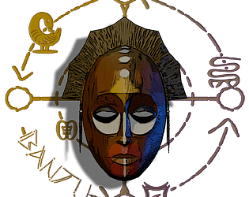

Projetos

jorogumos-story
Jorogumo's Story é um jogo baseado na lenda japonesa da Jorogumo, um youkai com forma de mulher-aracnídea. Na narrativa, um samurai decide enfrentar a criatura para proteger seu vilarejo. O jogador assume o papel de um quadrinista que precisa criar uma HQ sobre esse youkai, e o jogo representa o processo criativo dessa história.
Skills
Progranação em bolcos • Game Design • Level Design • Logica
Link

Hoppe
Após o primeiro contato com seres extraterrestres inicialmente pacífico a relação entrou em conflito devido ao medo humano, culminando na quase extinção da humanidade. No jogo, você controla Hoppe, um dos poucos sobreviventes, que parte em uma jornada para encontrar vida e abrigo. Enfrentando criaturas desconhecidas e diversos perigos, ele continua seguindo em frente guiado pela esperança.
Skills
Progranação C# • Game Design • Level Design
Link

Pepito welt
Quando o dono Graciano sai para trabalhar, Pepito descobre que sua irmã, Lakshmi, desapareceu. Para resgatá-la, o pequeno cachorro embarca em uma aventura em que sua própria casa se transforma em mundos imaginários cheios de desafios. Ele precisa atravessar esses cenários fantásticos para encontrá-la.
Skills
Progranação C# • Game Design • Level Design
Link
Do barco ao caixão
É um jogo multiplayer 3D conectado pela Steam, desenvolvido com o framework Mirror na Unity. Nele, os jogadores precisam sobreviver enquanto fogem de um monstro que patrulha o mapa. Para se proteger, o jogador pode se esconder em diferentes pontos do cenário, usando o ambiente a seu favor. O objetivo final é coletar galões de gasolina espalhados pelo mapa e utilizá-los para incendiar o ninho do monstro, encerrando a ameaça e vencendo a partida. A combinação de cooperação, stealth e tensão constante cria uma experiência desafiadora e envolvente.
Skills
Progranação C# • Game Design • Level Design
Link

Tereza 1° lugar Game Jam - Sebrae
Clara tem uma avó chamada Tereza, que veio a ter uma grave doença, e agora seu objetivo é visitá-la e tentar recuperar as memórias de uma juventude que não pode ser perdida. Clara precisa coletar lembranças e garantir que sua avó nunca esqueça de seu rosto.
Skills
Progranação C# • Game Design • Level Design
Link

Bantu 2° lugar Game Jam - Hugjam
Bantu é um jogo de suspense em terceira pessoa sobre as marcas da escravidão no Brasil. Guiando um menino que carrega uma máscara ancestral capaz de revelar o invisível, o jogador deverá se mover sorrateiramente em busca da liberdade de seu povo. Encontre a saída. Liberte-os da senzala. Desenvolvido durante a 3° HUG Jam - sobre o tema visibilidade. O jogo propõe reconhecer aquilo que foi escondido pela história: nomes, identidades e vivências.
Skills
Progranação C# • Game Design • Level Design